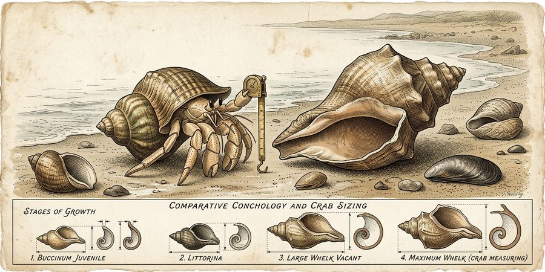
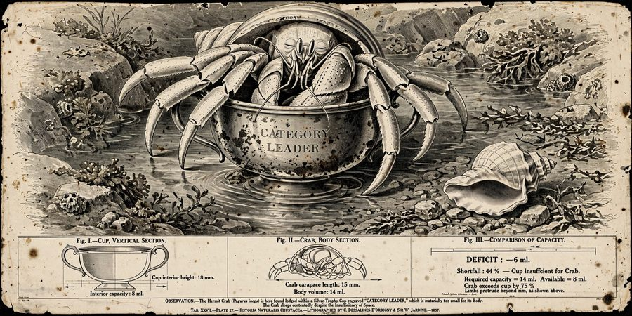
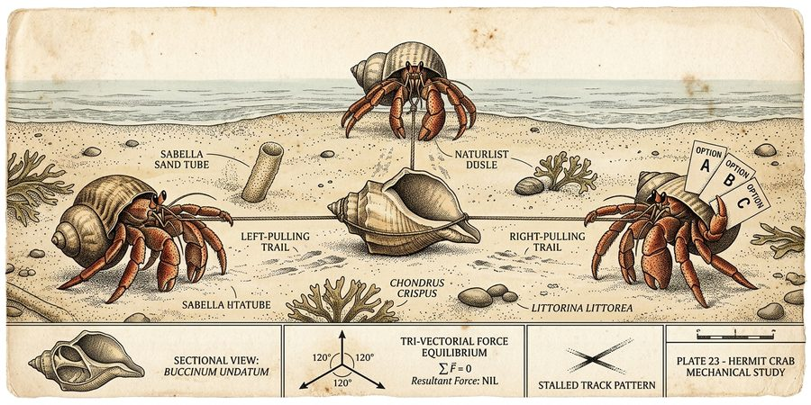

What is brand dysfunction?
Pick up any of these you’ve heard said about your own brand, and we’ll sort them below, from healthy to dysfunctional.
Collected specimens
Healthy
Settled
Dysfunctional
Most brands sit somewhere on a line.
Here's how we see it. Brand dysfunction is the gap between what a brand is supposed to do for the business and what it actually does. It opens slowly, through drift, and it usually goes unnoticed until something outside the company – a new competitor, a change in how people shop, a retailer handing your shelf space to its own label – shows how wide it has become.
The people are usually not the problem. Most brand teams are smart and hardworking, and the tools they use work. But brand work has to pass through the rest of the organization before it changes anything, and that's where it tends to get stuck.
So it helps to think of brand health as a position on a line. It runs from healthy, through settled, to dysfunctional, and brands drift along it without anyone deciding to move. The same brand can be healthy in one market and settled in another, which is part of why the drift is so hard to spot.

Plate III · HealthyPagurus aptus, the Well-Housed Hermit
Moves house when it must, and measures the next shell before it needs one.
The brand fits the business, the strategy shapes real decisions, and the team is already looking at what comes next.

Plate IV · SettledPagurus mediocris, the Settled Hermit
Has not moved house in some years and sees no particular reason to. Legs increasingly external.
The brand works well enough to defend but not well enough to be proud of. Past success has become a shell too small to grow in.

Plate V · DysfunctionalPagurus concors, the Committee Hermit
Several occupants, one shell, no agreed direction. Remarkably stable. Goes nowhere.
Everyone is pulling hard, in good faith, in different directions, and the net result is zero.
Work goes where the structure sends it.
Every organization has a structure that decides how work moves: planning cycles, agency rosters, approval chains, quarterly targets. Capable people follow those paths, and the paths produce the outcome. If the structure pushes every brief toward consensus and every launch toward the safe option, that's what the brand will get, no matter who's in the room.
Most of the limits were never decided. They were inherited: the category's conventions, the channel mix, the way launches have always been done. Over time they stop looking like choices and start looking like physics. Some are real, but a surprising number are habits nobody has questioned (usually because questioning them wasn't anyone's job).
It's also hard to see from inside. A company that mostly talks to itself describes itself in its own language and tests ideas against its own assumptions, so every round of internal refinement feels like progress while moving the thinking further from how the market sees the business. Kodak is the famous case. One of its own engineers built the first digital camera in 1975, and the company kept betting on film until it filed for bankruptcy in 2012. An outside view helps for a simple reason: it doesn't share the assumptions, so it can see which ones are doing the damage.
So small fixes bounce off. Brand work done inside the same structure gets absorbed by it. It's negotiated down to something nobody objects to, which also means nobody is passionate about it, and a year later the business is behaving exactly as it did before.
Settling is the easy option.
When a brand is working, the status quo is exactly what it should protect, and we'll say so. But the status quo is also the easy option. Nobody has to argue for it or gets blamed for it, and staying put feels safe even when it quietly costs more than moving would (Kahneman and Tversky called this loss aversion: a loss weighs more than a gain of the same size, and the gains from moving are the ones nobody can see yet).
But most teams know when they're settling. Ask a marketing leader whether they're happy with their brand, and the length of the pause tells you most of what you need to know.
How a brand gets functional again.
Take the rules apart. We break the category's conventions into their pieces and test which ones hold. Then we rebuild what survives into a position only this business could occupy, one that makes complete sense to your team and is hard to copy for a competitor still following the old rules.
Commit to a theory. We say plainly what's happening, why, and what would have to change for a different outcome, including what we don't know and what would prove us wrong. A menu of options leaves the client holding the risk. A theory takes a position and shows its work, so you can argue with it.
Act to learn. You can't collect every answer before you move, and waiting for certainty is just a more respectable way of settling. So we pick a few first moves small enough to try soon and clear enough to read, and let the market show how it really responds. Each result sharpens the theory.
Brands rarely fail all at once.
They drift, one reasonable decision at a time, and drift can be corrected. Nobody controls a brand outright, since its meaning gets made together with the people who buy it. But most of the limits a team works inside were chosen at some point, and what was chosen once can be chosen again, on purpose this time.
Partner with us.
Tell us what you collected. We'll start with an honest read on where your brand sits, and take it from there together.
hello@thisisfunction.io